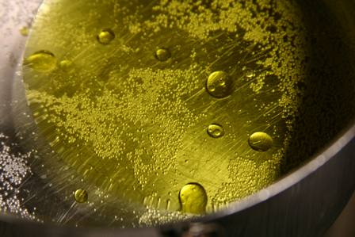

Este grupo incluye la grasa vacuna, grasa de cerdo, manteca, margarina, aceites vegetales (arroz, girasol, oliva, maíz, soja), frutas secas (almendra, avellana, castaña de cajú, nueces), semillas oleaginosas (girasol, lino, zapallo, sésamo) y chocolate.

Como este grupo tiene un alto contenido de grasas, se recomiendan cantidades muy limitadas de estos alimentos. Se recomienda a niños y adolescentes consumir entre dos y tres porciones diarias de este grupo de alimentos.
Algunos ejemplos de porciones son: